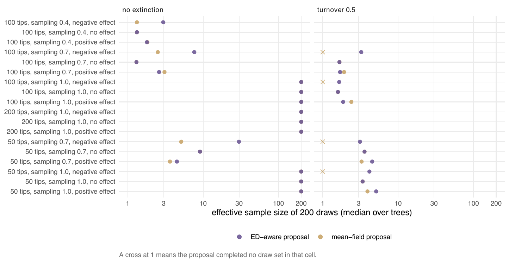

E3 — The two thinning proposals for ned at fixed parameters
| Status | complete |
| Package build | 64edf63 (by the build audit; identical to a clean build except the random stream through the ED-aware thinning proposal, which is the proposal E3 measures — valid draws, not reproducible seed for seed) |
| Driver / analysis | sim/E3-proposals.R, sim/E3-tables.R |
| Data | results/E3/proposals-main.csv (720 rows), results/E3/proposals-paper.csv (180 rows); cell table manuscript/tables/E3-cells.md |
Question
Claim C4: the ED-aware thinning proposal gives a larger effective sample than the mean-field one on every tree, and for cr/dd the surrogate (then "BDI") proposal a larger one than thinning, with both estimating the same marginal likelihood. E2 measured what a fit makes of the proposals; E3 holds everything else fixed and measures the proposals against each other at the generating values.
Design
| parameter | value | meaning |
|---|---|---|
| trees | first 5 trees of every E2 cell: 24 main-tier cells and 6 paper-tier cells | |
| main tier | n ∈ {50, 100}, \(\rho\) ∈ {1, 0.7}, \(\beta\)_ED ∈ {-0.15, 0, +0.15}\(\lambda\)0, turnover \(\varepsilon\) ∈ {0, 0.5} | cell names n050-r100-bm-e50 etc. (bm/b0/bp = negative/zero/positive effect) |
| paper tier | n = 200 at \(\rho\) = 1, \(\varepsilon\) = 0; n = 100 at \(\rho\) = 0.4, \(\varepsilon\) = 0; three \(\beta\)_ED each | |
| model | ned |
|
| proposals | mean-field thinning and ED-aware thinning | |
| draws | 200 at the generating values, 3 independent sets per tree and proposal | |
| recorded | ESS, f̂ and its SE, zero-weight draws, rejected draws, median and maximum augmented-tree size, seconds |
The cr/dd half (surrogate against thinning at the exact MLE) is not repeated here: the driver header names it as the fixed-\(\theta\) arm of E1 (table E1-C).
Pre-set rule
C4: the ESS ordering (ED-aware ≥ mean-field) holds on ≥ 95% of trees; surrogate-thinning f̂ agreement within 3 combined SE for cr/dd.
Results
At complete sampling and turnover 0 both proposals keep all 200 draws at 50, 100 and 200 tips. At turnover 0.5 both fall to 1.6-5.1, and at \(\rho\) = 0.7 and 0.4 to 1.3-9.1 (except n050-r70-bm-e00, where the ED-aware proposal keeps 29.8 against 5.1). Where the mean-field proposal fails every set, the ED-aware one completes most:
| cell | sets completed, mean-field / ED-aware (of 15) | ESS mean-field / ED-aware | median augmented nodes (ED-aware) | s per set, mf / ED |
|---|---|---|---|---|
| n050-r100-bm-e50 | 0 / 12 | — / 4.2 | 606 | — / 6.0 |
| n050-r70-bm-e50 | 0 / 15 | — / 3.1 | 840 | — / 11.4 |
| n100-r100-bm-e50 | 0 / 12 | — / 1.7 | 1852 | — / 47.7 |
| n100-r70-bm-e50 | 0 / 8 | — / 3.2 | 1810 | — / 41.7 |
| n100-r40-bm-e00 | 3 / 15 | 1.3 / 3.0 | 267 | 3.8 / 4.2 |
| n100-r70-bm-e00 | 9 / 15 | 2.5 / 7.6 | 109 | 0.9 / 0.7 |
All six are cells with a negative ED effect under extinction or incomplete sampling. Counted per tree (E3-cells.md): 124 of 147 trees with both proposals completed have ED-aware ≥ mean-field, 77%; 23 trees completed only under the ED-aware proposal and enter neither count. Counted per set (ledger recomputation): 207 of 294 (70%) in the main tier, 63 of 78 (81%) in the paper tier. Where both complete, the ED-aware proposal costs 1.0-2.4 times the mean-field one per set at the same cell. As a side check (not the design's), the two thinning proposals' f̂ agree within 3 combined SE on 179 of 204 main-tier and 21 of 33 paper-tier set pairs.

Conclusion
C4's ordering half is not met: 77% of trees against the 95% threshold. The surrogate-thinning agreement half for cr/dd is evaluated in E1 (E1-C), not here. What E3 shows is that the ED-aware proposal's advantage is in completing where the mean-field proposal fails (23 trees, four cells with no mean-field set at all), which the ≥ rule does not count; where both complete, both are below 10 effective draws in every cell with extinction or incomplete sampling. These are at the generating values, without fitting, so they are best-case samples. E3 compares only the two thinning variants; the comparison with the surrogate proposal, which became the default, is E6 and E7.